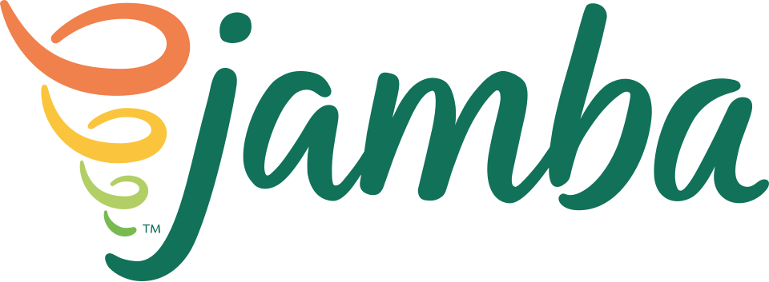

잠바주스 Jamba
잠바주스(Jamba)는 블렌딩된 과일 및 채소 주스, 스무디 및 기타 식품을 판매하는 미국의 퀵 서비스 레스토랑 및 주스 바 체인이다. 1990년 샌루이스오비스포에서 첫 매장을 열었다.
최종 업데이트

잠바주스는 어떤 브랜드인가
잠바주스는 블렌딩된 과일 및 채소 주스, 스무디, 기타 식품을 판매하는 미국의 퀵 서비스 레스토랑 및 주스 바 체인이다. 1990년 샌루이스오비스포에서 주스 클럽이라는 이름으로 첫 매장을 열었고, 1995년 잠바 주스로 이름을 바꿨다.
2019년에는 확장된 메뉴와 '주스'라는 단어에 대한 부정적인 건강 관련 의미를 반영해 이름을 잠바로 변경했다. 현재 GoTo Foods가 소유하며 미국 36개 주에서 850개 이상의 매장을 운영한다.
오스트레일리아, 일본, 필리핀, 중화민국, 대한민국, 태국, 인도네시아에도 매장이 있다.
잠바주스는 어떻게 시작되고 성장했나
커크 페론이 캘리포니아 폴리테크닉 주립 대학교 샌루이스오비스포에 설립했다. 슈퍼마켓 관리자로 일했고 열렬한 사이클리스트이자 건강한 생활 방식을 지지했던 페론은 운동 후 간식의 품질에 불만을 느껴 레스토랑을 열었다.
주스 클럽이라는 이름의 첫 레스토랑은 1990년 3월 31일 문을 열었다. 1991년까지 가맹업을 통해 19개 지점으로 확장했으나, 페론은 나중에 프랜차이즈 모델을 포기하고 회사 소유 매장을 선호했다.
1995년 서아프리카어로 '축하'를 의미하는 단어에서 따와 잠바 주스로 이름을 바꿨고, 1999년 3월 24일 경쟁 주스 바인 Zuka Juice를 인수했다.
잠바주스의 브랜드 아이덴티티는 무엇인가
주스 클럽에서 출발해 서아프리카어 단어에서 이름을 딴 미국 스무디·주스 바 체인으로, 2019년 '주스'를 뗀 잠바로 이름을 바꾼 점이 특징이다.
잠바주스의 대표 제품과 서비스는 무엇인가
블렌딩된 과일 및 채소 주스와 스무디가 중심이다. 2009년 6월에는 스무디에서 초점을 바꾸어 랩, 샌드위치, 플랫브레드를 판매하기 시작했다.
2014년에는 신선 주스 메뉴를 확장해 케일, 사탕무, 생강 같은 신선한 재료로 주문 제작 주스 블렌드를 만들기 시작했다. 2016년 7월 올드 패서디나에 콘셉트 매장 잠바 주스 이노베이션 바를 열어 퀴노아 볼, 훔무스 토스트, 직접 만든 감자칩, 비건 식품을 판매했으며, 이 매장은 2017년 1월 3일 일반 잠바 매장으로 바뀌었다.
2007년 12월에는 네슬레와 협력해 미리 준비된 음료 제품군에 이름을 빌려주기로 했으나, 2008년 12월 19일 일관된 제조의 어려움을 이유로 판매 중단을 발표했다.
잠바주스는 지금 어떤 상태인가
2019년 Focus Brands에 인수되었고, 현재는 사모 펀드 회사 로어크 캐피털 그룹의 계열사인 GoTo Foods가 소유한다. 미국 36개 주에서 850개 이상의 매장을 운영하며 해외에도 매장이 있다.
대한민국에는 2011년 SPC그룹을 통해 들어왔고, 일본에는 2020년 8월 4일 도쿄에 첫 매장을 열었다.
잠바주스 로고는 어떻게 변해왔나
자주 묻는 질문
잠바주스는 어느 나라 브랜드인가요?
잠바주스는 미국의 식음료 브랜드입니다.
잠바주스는 언제 설립되었나요?
잠바주스는 1990년 설립되었습니다.
잠바주스의 브랜드 아이덴티티는 무엇인가요?
주스 클럽에서 출발해 서아프리카어 단어에서 이름을 딴 미국 스무디·주스 바 체인으로, 2019년 '주스'를 뗀 잠바로 이름을 바꾼 점이 특징이다.
잠바주스의 대표 제품은 무엇인가요?
블렌딩된 과일 및 채소 주스와 스무디가 중심이다.
잠바주스는 어느 기업이 소유하고 있나요?
2019년 Focus Brands에 인수되었고, 현재는 사모 펀드 회사 로어크 캐피털 그룹의 계열사인 GoTo Foods가 소유한다.
잠바주스의 본사는 어디에 있나요?
잠바주스의 본사는 에머리빌에 있습니다(위키데이터 기준).
잠바주스의 공식 웹사이트는 어디인가요?
잠바주스의 공식 웹사이트는 https://www.jambajuice.com/ 입니다.
출처와 검증
잠바주스 관련 참고: 공식 웹사이트 · 위키데이터 Q3088784 · 한국어 위키백과 · 영어 위키백과. 브랜드명은 한글과 원어를 함께 표기하되 데이터에 없는 표기는 만들지 않습니다. 기원 국가·설립연도는 검수된 정의문에서 확인된 값을 우선하고, 없을 때만 공식 웹사이트 URL이 일치하는 위키데이터 개체의 값을 씁니다. 탄생일의 월·일은 위키데이터, 위키백과 정보상자, 본문 가운데 같은 연월로 확인되는 값만 싣고, 출처끼리 다르면 싣지 않습니다. 웹 첫 보관은 인터넷 아카이브가 공식 사이트 첫 화면을 처음 보관한 날로, 사이트 개설일과 다를 수 있습니다. 위키데이터 값은 2026-11-06 기준입니다.